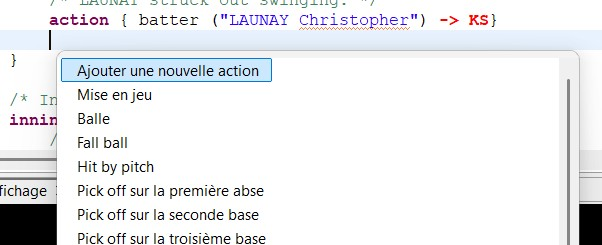
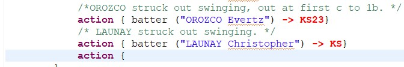

À tout moment, l’utilisateur peut demander la liste des éléments valides à l’endroit où se trouve le curseur, par le raccourci Ctrl+Espace. Il choisit dans la liste au lieu de tout taper, ce qui accélère la saisie et évite les fautes de notation.

Dans l’exemple ci-dessus, on peut sélectionner ‘Ajouter une nouvelle action’ et le résultat sera le suivant.

L’auto-complétion de l’outil ne se contente pas de lister tous les mots possibles : les propositions sont liées à ce qui a déjà été saisi et à l’état du match. L’outil ne propose que ce qui est réellement possible à cet instant du jeu.
Par exemple, si les bases sont vides, l’outil ne propose pas d’action qui concerne un coureur. De même, les joueurs proposés sont ceux qui sont effectivement présents dans le lineup actif. L’exemple suivit décrit les propositions possibles pour l’avance du batteur et des coureurs.